Plots
The marginaleffects package includes three flexible functions to plot
estimates and display interactions.
plot_predictions()plot_comparisons()plot_slopes()
Those functions can be used to plot two kinds of quantities:
- Conditional estimates:
- Estimates computed on a substantively meaningful grid of predictor values.
- This is analogous to using the
newdataargument with thedatagrid()function in apredictions(),comparisons(), orslopes()call.
- Marginal estimates:
- Estimates computed on the original data, but averaged by subgroup.
- This is analogous to using the
newdataargument with thedatagrid()function in apredictions(),comparisons(), orslopes()call.
To begin, let’s download data and fit a model:
## libraries
library(ggplot2)
library(patchwork) # combine plots with the + and / signs
library(marginaleffects)
## visual theme
theme_set(theme_minimal())
okabeito <- c('#E69F00', '#56B4E9', '#009E73', '#F0E442', '#0072B2', '#D55E00', '#CC79A7', '#999999', '#000000')
options(ggplot2.discrete.fill = okabeito)
options(ggplot2.discrete.colour = okabeito)
options(width = 1000)
## download data
dat <- read.csv("https://vincentarelbundock.github.io/Rdatasets/csv/palmerpenguins/penguins.csv")
mod <- lm(body_mass_g ~ flipper_length_mm * species * bill_length_mm + island, data = dat)
Predictions
Conditional predictions
We call a prediction “conditional” when it is made on a grid of user-specified values. For example, we predict penguins’ body mass for different values of flipper length and species:
pre <- predictions(mod, newdata = datagrid(flipper_length_mm = c(172, 231), species = unique))
pre
#>
#> flipper_length_mm species Estimate Std. Error z Pr(>|z|) S 2.5 % 97.5 %
#> 172 Adelie 3859 204 18.9 <0.001 263.0 3460 4259
#> 172 Chinstrap 3146 234 13.5 <0.001 134.6 2688 3604
#> 172 Gentoo 2545 369 6.9 <0.001 37.5 1822 3268
#> 231 Adelie 4764 362 13.2 <0.001 128.9 4054 5474
#> 231 Chinstrap 4086 469 8.7 <0.001 58.1 3166 5006
#> 231 Gentoo 5597 155 36.0 <0.001 940.9 5292 5901
#>
#> Columns: rowid, estimate, std.error, statistic, p.value, s.value, conf.low, conf.high, body_mass_g, bill_length_mm, island, flipper_length_mm, species
#> Type: response
The condition argument of the plot_predictions() function can be
used to build meaningful grids of predictor values somewhat more easily:
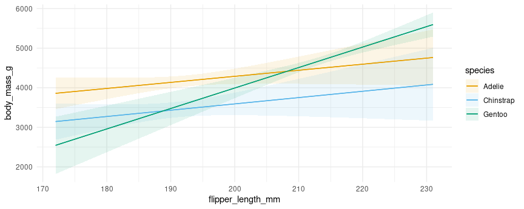
Note that the values at each end of the x-axis correspond to the numerical results produced above. For example, the predicted outcome for a Gentoo with 231mm flippers is 5597.
We can include a 3rd conditioning variable, specify what values we want
to consider, supply R functions to compute summaries, and use one of
several string shortcuts for common reference values (“threenum”,
“minmax”, “quartile”, etc.):
plot_predictions(
mod,
condition = list(
"flipper_length_mm" = 180:220,
"bill_length_mm" = "threenum",
"species" = unique))
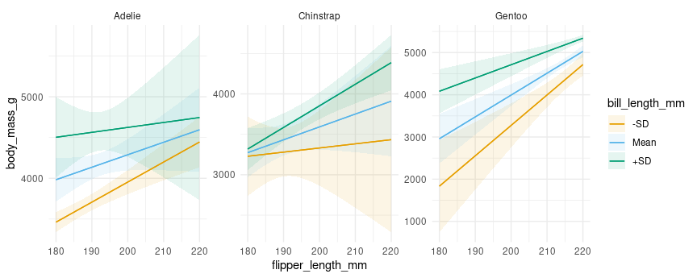
See ?plot_predictions for more information.
Marginal predictions
We call a prediction “marginal” when it is the result of a two step process: (1) make predictions for each observed unit in the original dataset, and (2) average predictions across one or more categorical predictors. For example:
predictions(mod, by = "species")
#>
#> species Estimate Std. Error z Pr(>|z|) S 2.5 % 97.5 %
#> Adelie 3701 27.2 136.1 <0.001 Inf 3647 3754
#> Chinstrap 3733 40.5 92.2 <0.001 Inf 3654 3812
#> Gentoo 5076 30.1 168.5 <0.001 Inf 5017 5135
#>
#> Columns: species, estimate, std.error, statistic, p.value, s.value, conf.low, conf.high
#> Type: response
We can plot those predictions by using the analogous command:
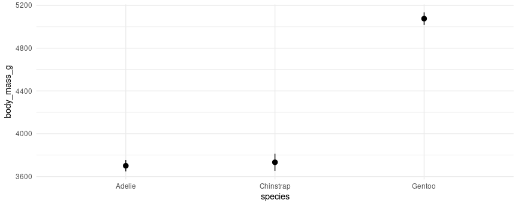
We can also make predictions at the intersections of different variables:
predictions(mod, by = c("species", "island"))
#>
#> species island Estimate Std. Error z Pr(>|z|) S 2.5 % 97.5 %
#> Adelie Biscoe 3710 50.4 73.7 <0.001 Inf 3611 3808
#> Adelie Dream 3688 44.6 82.6 <0.001 Inf 3601 3776
#> Adelie Torgersen 3706 46.8 79.2 <0.001 Inf 3615 3798
#> Chinstrap Dream 3733 40.5 92.2 <0.001 Inf 3654 3812
#> Gentoo Biscoe 5076 30.1 168.5 <0.001 Inf 5017 5135
#>
#> Columns: species, island, estimate, std.error, statistic, p.value, s.value, conf.low, conf.high
#> Type: response
Note that certain species only live on certain islands. Visually:
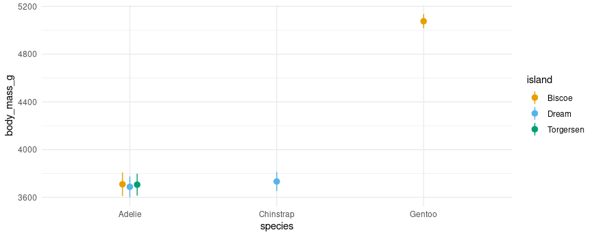
Comparisons
Conditional comparisons
The syntax for conditional comparisons is the same as the syntax for conditional predictions, except that we now need to specify the variable(s) of interest using an additional argument:
comparisons(mod,
variables = "flipper_length_mm",
newdata = datagrid(flipper_length_mm = c(172, 231), species = unique))
#>
#> Term Contrast flipper_length_mm species Estimate Std. Error z Pr(>|z|) S 2.5 % 97.5 % bill_length_mm island
#> flipper_length_mm +1 172 Adelie 15.3 9.25 1.66 0.0976 3.4 -2.81 33.5 43.9 Biscoe
#> flipper_length_mm +1 172 Chinstrap 15.9 11.37 1.40 0.1610 2.6 -6.34 38.2 43.9 Biscoe
#> flipper_length_mm +1 172 Gentoo 51.7 8.70 5.95 <0.001 28.5 34.68 68.8 43.9 Biscoe
#> flipper_length_mm +1 231 Adelie 15.3 9.25 1.66 0.0976 3.4 -2.81 33.5 43.9 Biscoe
#> flipper_length_mm +1 231 Chinstrap 15.9 11.37 1.40 0.1610 2.6 -6.34 38.2 43.9 Biscoe
#> flipper_length_mm +1 231 Gentoo 51.7 8.70 5.95 <0.001 28.5 34.68 68.8 43.9 Biscoe
#>
#> Columns: rowid, term, contrast, estimate, std.error, statistic, p.value, s.value, conf.low, conf.high, flipper_length_mm, species, predicted_lo, predicted_hi, predicted, body_mass_g, bill_length_mm, island
#> Type: response
plot_comparisons(mod,
variables = "flipper_length_mm",
condition = c("bill_length_mm", "species"))
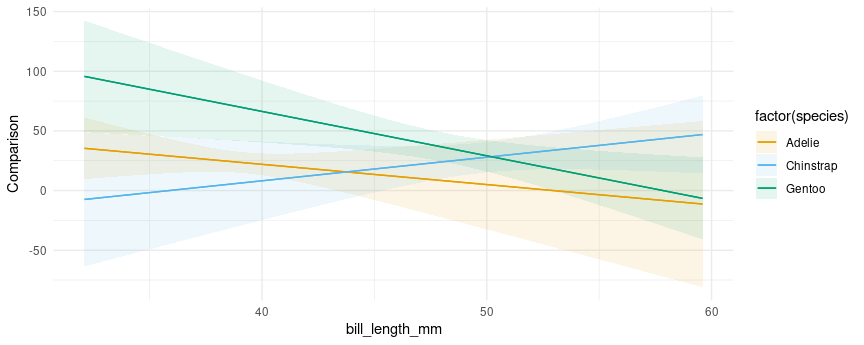
We can specify custom comparisons, as we would using the variables
argument of the comparisons() function. For example, see what happens
to the predicted outcome when flipper_length_mm increases by 1
standard deviation or by 10mm:
plot_comparisons(mod,
variables = list("flipper_length_mm" = "sd"),
condition = c("bill_length_mm", "species")) +
plot_comparisons(mod,
variables = list("flipper_length_mm" = 10),
condition = c("bill_length_mm", "species"))
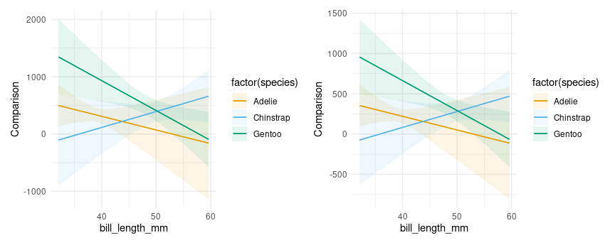
Notice that the vertical scale is different in the plots above, reflecting the fact that we are plotting the effect of a change of 1 standard deviation on the left vs 10 units on the right.
Like the comparisons() function, plot_comparisons() is a very
powerful tool because it allows us to compute and display custom
comparisons such as differences, ratios, odds, lift, and arbitrary
functions of predicted outcomes. For example, if we want to plot the
ratio of predicted body mass for different species of penguins, we could
do:
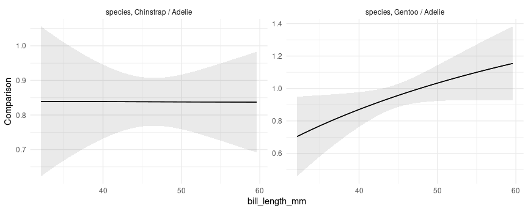
The left panel shows that the ratio of Chinstrap body mass to Adelie body mass is approximately constant, at slightly above 0.8. The right panel shows that the ratio of Gentoo to Adelie body mass is depends on their bill length. For birds with short bills, Gentoos seem to have smaller body mass than Adelies. For birds with long bills, Gentoos seem heavier than Adelies, although the null ratio (1) is not outside the confidence interval.
Marginal comparisons
As above, we can also display marginal comparisons, by subgroups:
plot_comparisons(mod,
variables = "flipper_length_mm",
by = "species") +
plot_comparisons(mod,
variables = "flipper_length_mm",
by = c("species", "island"))
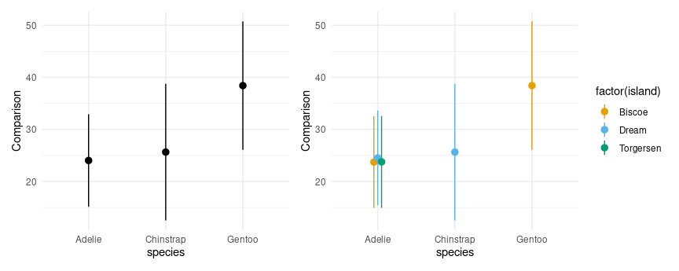
Multiple contrasts at once:
plot_comparisons(mod,
variables = c("flipper_length_mm", "bill_length_mm"),
by = c("species", "island"))
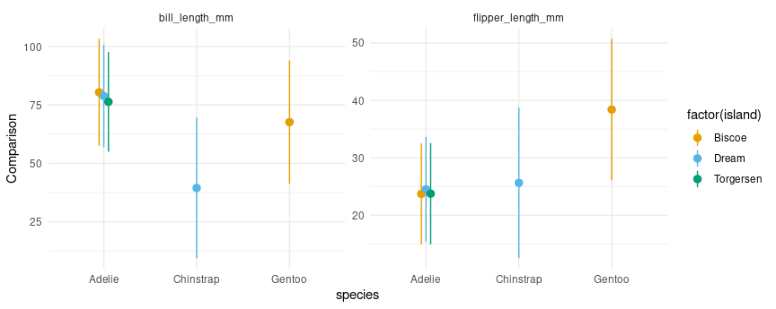
Slopes
If you have read the sections above, the behavior of the plot_slopes()
function should not surprise. Here we give two examples in which we
compute display the elasticity of body mass with respect to bill length:
## conditional
plot_slopes(mod,
variables = "bill_length_mm",
slope = "eyex",
condition = c("species", "island"))
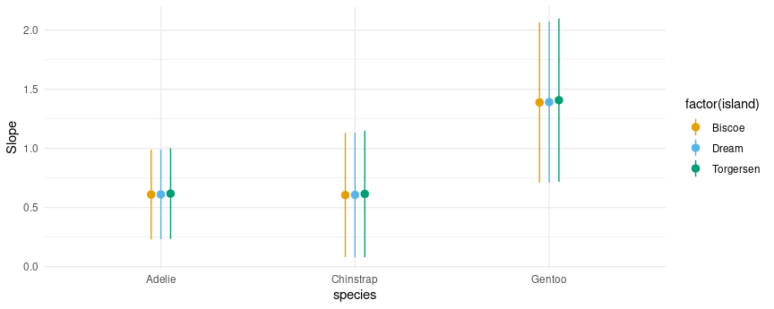
## marginal
plot_slopes(mod,
variables = "bill_length_mm",
slope = "eyex",
by = c("species", "island"))
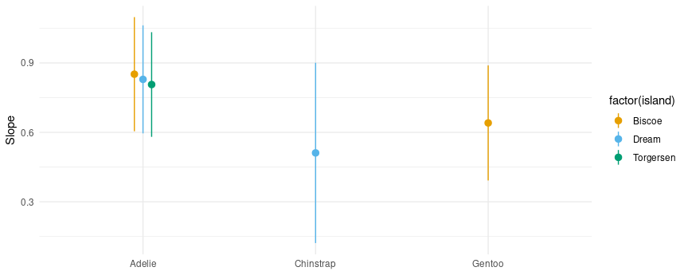
And here is an example of a marginal effects (aka “slopes” or “partial derivatives”) plot for a model with multiplicative interactions between continuous variables:
mod2 <- lm(mpg ~ wt * qsec * factor(gear), data = mtcars)
plot_slopes(mod2, variables = "qsec", condition = c("wt", "gear"))
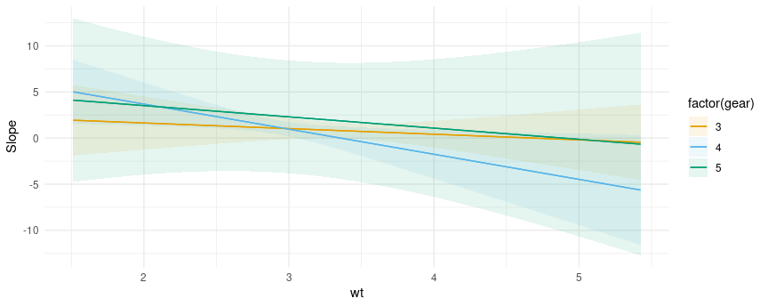
Uncertainty estimates
As with all the other functions in the package, the plot_*() functions
have a conf_level argument and a vcov argument which can be used to
control the size of confidence intervals and the types of standard
errors used:
plot_slopes(mod,
variables = "bill_length_mm", condition = "flipper_length_mm") +
ylim(c(-150, 200)) +
## clustered standard errors
plot_slopes(mod,
vcov = ~island,
variables = "bill_length_mm", condition = "flipper_length_mm") +
ylim(c(-150, 200)) +
## alpha level
plot_slopes(mod,
conf_level = .8,
variables = "bill_length_mm", condition = "flipper_length_mm") +
ylim(c(-150, 200))
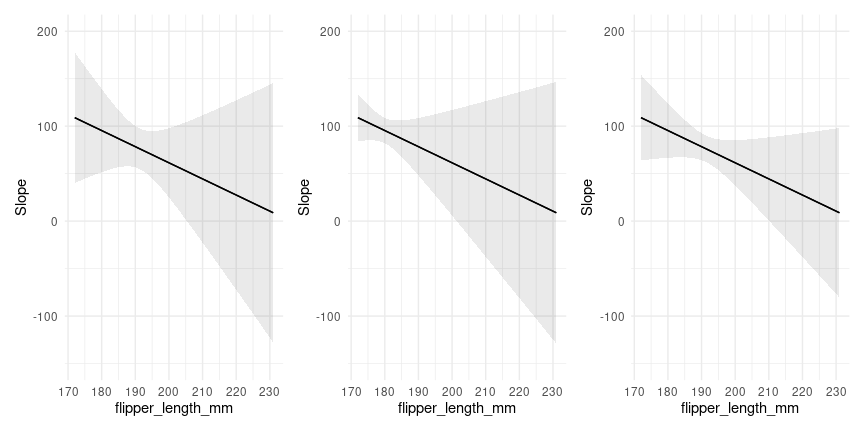
Customization
A very useful feature of the plotting functions in this package is that
they produce normal ggplot2 objects. So we can customize them to our
heart’s content, using ggplot2 itself, or one of the many packages
designed to augment its functionalities:
library(ggrepel)
mt <- mtcars
mt$label <- row.names(mt)
mod <- lm(mpg ~ hp * factor(cyl), data = mt)
plot_predictions(mod, condition = c("hp", "cyl"), points = .5, rug = TRUE, vcov = FALSE) +
geom_text_repel(aes(x = hp, y = mpg, label = label),
data = subset(mt, hp > 250),
nudge_y = 2) +
theme_classic()
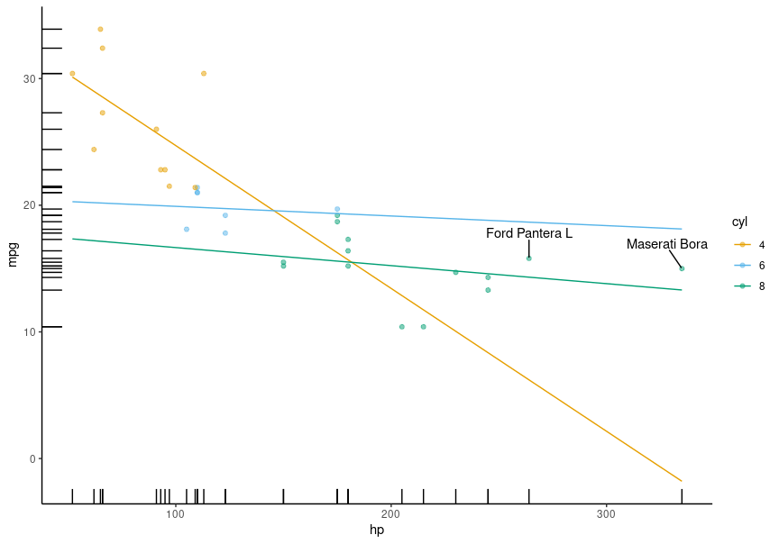
All the plotting functions work with all the model supported by the
marginaleffects package, so we can plot the output of a logistic
regression model. This plot shows the probability of survival aboard the
Titanic, for different ages and different ticket classes:
library(ggdist)
library(ggplot2)
dat <- "https://vincentarelbundock.github.io/Rdatasets/csv/Stat2Data/Titanic.csv"
dat <- read.csv(dat)
mod <- glm(Survived ~ Age * SexCode * PClass, data = dat, family = binomial)
plot_predictions(mod, condition = c("Age", "PClass")) +
geom_dots(
alpha = .8,
scale = .3,
pch = 18,
data = dat, aes(
x = Age,
y = Survived,
side = ifelse(Survived == 1, "bottom", "top")))

Thanks to Andrew Heiss who inspired this plot.
Designing effective data visualizations requires a lot of customization
to the specific context and data. The plotting functions in
marginaleffects offer a powerful way to iterate quickly between plots
and models, but they obviously cannot support all the features that
users may want. Thankfully, it is very easy to use the slopes
functions to generate datasets that can then be used in ggplot2 or any
other data visualization tool. Just use the draw argument:
p <- plot_predictions(mod, condition = c("Age", "PClass"), draw = FALSE)
head(p)
#> rowid estimate p.value s.value conf.low conf.high Survived SexCode Age PClass
#> 1 1 0.8679723 0.0013307148 9.553583 0.6754794 0.9540527 0.4140212 0.3809524 0.17000 1st
#> 2 2 0.8956789 0.0001333343 12.872665 0.7401973 0.9627887 0.4140212 0.3809524 0.17000 2nd
#> 3 3 0.4044513 0.2667759176 1.906300 0.2554245 0.5734603 0.4140212 0.3809524 0.17000 3rd
#> 4 4 0.8631027 0.0011563592 9.756195 0.6749549 0.9503543 0.4140212 0.3809524 1.61551 1st
#> 5 5 0.8813224 0.0001728858 12.497893 0.7228530 0.9548415 0.4140212 0.3809524 1.61551 2nd
#> 6 6 0.3934924 0.1899483119 2.396321 0.2535791 0.5533716 0.4140212 0.3809524 1.61551 3rd
This allows us to feed the data easily to other functions, such as those
in the useful ggdist and distributional packages:
library(ggdist)
library(distributional)
plot_slopes(mod, variables = "SexCode", condition = c("Age", "PClass"), type = "link", draw = FALSE) |>
ggplot() +
stat_lineribbon(aes(
x = Age,
ydist = dist_normal(mu = estimate, sigma = std.error),
fill = PClass),
alpha = 1 / 4)
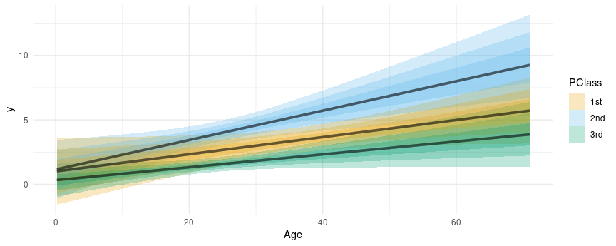
Fits and smooths
We can compare the model predictors with fits and smoothers using the
geom_smooth() function from the ggplot2 package:
dat <- "https://vincentarelbundock.github.io/Rdatasets/csv/Stat2Data/Titanic.csv"
dat <- read.csv(dat)
mod <- glm(Survived ~ Age * PClass, data = dat, family = binomial)
plot_predictions(mod, condition = c("Age", "PClass")) +
geom_smooth(data = dat, aes(Age, Survived), method = "lm", se = FALSE, color = "black") +
geom_smooth(data = dat, aes(Age, Survived), se = FALSE, color = "black")
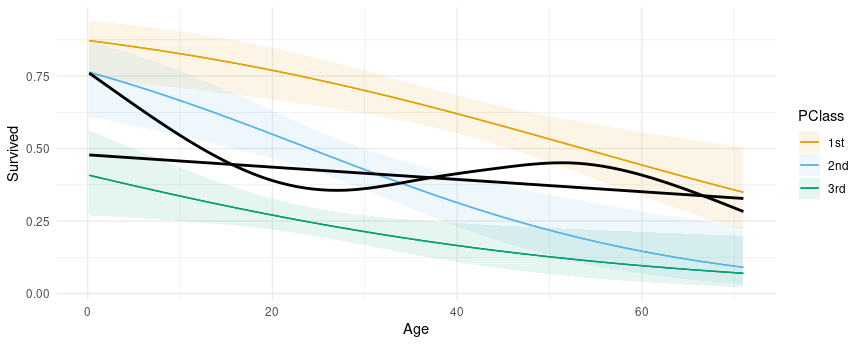
Groups and categorical outcomes
In some models, marginaleffects functions generate different estimates
for different groups, such as categorical outcomes. For example,
library(MASS)
mod <- polr(factor(gear) ~ mpg + hp, data = mtcars)
predictions(mod)
#>
#> Group Estimate Std. Error z Pr(>|z|) S 2.5 % 97.5 %
#> 3 0.5316 0.1127 4.72 <0.001 18.7 0.3107 0.753
#> 3 0.5316 0.1127 4.72 <0.001 18.7 0.3107 0.753
#> 3 0.4492 0.1200 3.74 <0.001 12.4 0.2140 0.684
#> 3 0.4944 0.1111 4.45 <0.001 16.8 0.2765 0.712
#> 3 0.4213 0.1142 3.69 <0.001 12.1 0.1973 0.645
#> --- 86 rows omitted. See ?avg_predictions and ?print.marginaleffects ---
#> 5 0.6894 0.1957 3.52 <0.001 11.2 0.3059 1.073
#> 5 0.1650 0.1290 1.28 0.2009 2.3 -0.0878 0.418
#> 5 0.1245 0.0698 1.78 0.0744 3.7 -0.0123 0.261
#> 5 0.3779 0.3243 1.17 0.2439 2.0 -0.2578 1.014
#> 5 0.0667 0.0458 1.46 0.1455 2.8 -0.0231 0.157
#> Columns: rowid, group, estimate, std.error, statistic, p.value, s.value, conf.low, conf.high, gear, mpg, hp
#> Type: probs
We can plot those estimates in the same way as before, by specifying
group as one of the conditional variable, or by adding that column to
a facet_wrap() call:
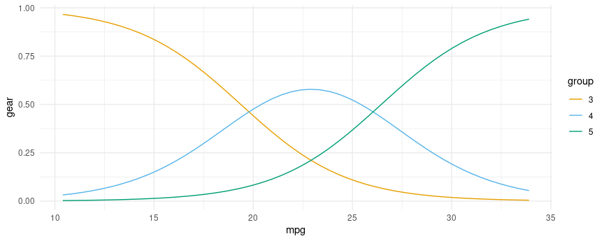
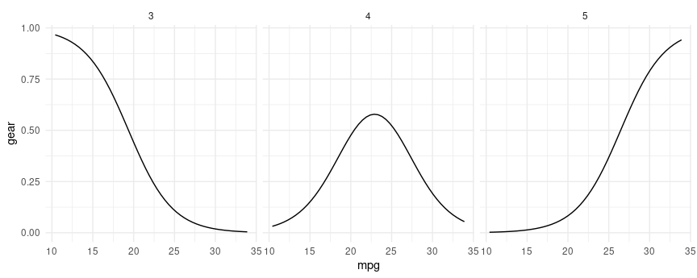
plot() and marginaleffects objects
Some users may feel inclined to call plot() on a object produced by
marginaleffects object. Doing so will generate an informative error
like this one:
mod <- lm(mpg ~ hp * wt * factor(cyl), data = mtcars)
p <- predictions(mod)
plot(p)
#> Error: Please use the `plot_predictions()` function.
The reason for this error is that the user query is underspecified.
marginaleffects allows users to compute so many quantities of interest
that it is not clear what the user wants when they simply call plot().
Adding several new arguments would compete with the main plotting
functions, and risk sowing confusion. The marginaleffects developers
thus decided to support one main path to plotting: plot_predictions(),
plot_comparisons(), and plot_slopes().
That said, it may be useful to remind users that all marginaleffects
output are standard “tidy” data frames. Although they get pretty-printed
to the console, all the listed columns are accessible via standard R
operators. For example:
p <- avg_predictions(mod, by = "cyl")
p
#>
#> cyl Estimate Std. Error z Pr(>|z|) S 2.5 % 97.5 %
#> 4 26.7 0.695 38.4 <0.001 Inf 25.3 28.0
#> 6 19.7 0.871 22.7 <0.001 375.1 18.0 21.5
#> 8 15.1 0.616 24.5 <0.001 438.2 13.9 16.3
#>
#> Columns: cyl, estimate, std.error, statistic, p.value, s.value, conf.low, conf.high
#> Type: response
p$estimate
#> [1] 26.66364 19.74286 15.10000
p$std.error
#> [1] 0.6951236 0.8713835 0.6161612
p$conf.low
#> [1] 25.30122 18.03498 13.89235
This allows us to plot all results very easily with standard plotting functions:
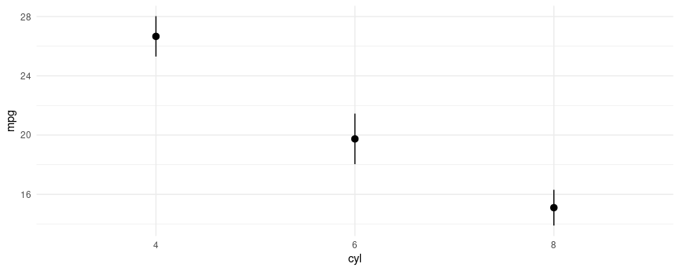
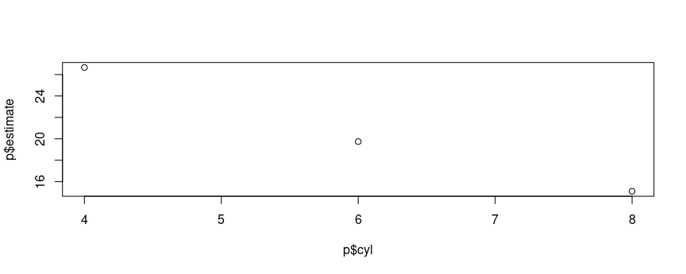
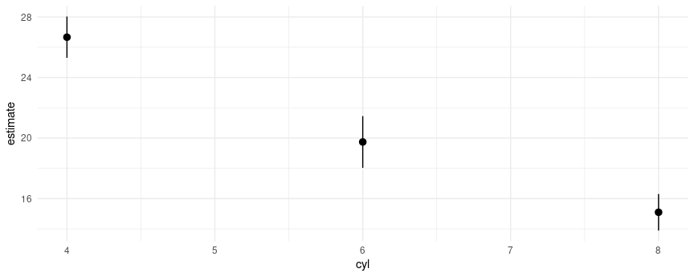